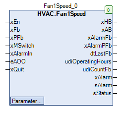

Fan1Speed (FB)¶
FUNCTION_BLOCK Fan1Speed
Short Description¶
Control of a single-stage fanAdditional functions: air deficiency monitoring, operation monitoring, repair switch, manual override, status displayTypical application: Control of a room exhaust fan
Portrayal¶

Interfaces¶
Inputs¶
Name Datatype
Range
Init-Value
Function
XEn
BOOL Requirement of the fan
xFb BOOL Operating message of the fan
xPFb BOOL Report of the air shortage situation
xMSwitch BOOL Message from the repair switch
xAlarmIn BOOL Fault message of the fan
eAOO HVACTYPES.eManBin HVACTYPES.eManBin.Auto, HVACTYPES.eManBin.ManOff, HVACTYPES.eManBin.ManOn HVACTYPES.eManBin.Auto Operating mode of manual override - hardware
xQuit BOOL FALSE Resetting the fault messages (monitoring of operation, air-shortage monitoring)
outputs¶
Name Datatype
Range
Init-Value
Function
xHB BOOL Release - fan after manual override
xAB BOOL Release - fan before manual override
xAlarmFb BOOL Fault message of the operation monitoring
xAlarmPFb BOOL Fault message of the air deficiency monitoring
dtLastFb DATE_AND_TIME Date / time of the last operation of the fan
udiOperatingHours UDINT Operating hours of the circulation pump
udiCountFb UDINT Number of activations of the circulating pump
xAlarm BOOL collective fault message
sAlarm STRING Message texts for faults
sStatus STRING Message texts for the operating status
Setpoints / parameters¶
Name Datatype
Range
Init-Value
Function
udiPFbControlTime UDINT 1 bis 3600s 30s Message delay of the air deficiency monitoring
xAlarmControl BOOL FALSE Influence of xAlarm on xAB
udiFbControlTime UDINT 0 ... 300s 60s Message delay of the operation monitoring
xFbControl BOOL TRUE Enabling / disabling operation monitoring
eManModeB eMANBIN eMANBIN.Auto, eMANBIN.ManOff, eMANBIN.ManOn eMANBIN.Auto Operating mode of manual override for the digital output xHB
Functional Description¶
General¶
Release - fan before manual override xAB¶
Release - fan after manual override xHB¶
xAB eManModeB xHB Note
FALSE eMANBIN.Auto FALSE Manual override module in automatic operation
TRUE eMANBIN.Auto TRUE Manual override module in automatic operation
X eMANBIN.ManOn TRUE Manual override module in manual operation On
X eMANBIN.ManOff FALSE Manual override module in manual operation Off
Message from the maintenance switch xMSwitch¶
Operating hours and power-on operations¶
Date / time of the last operation of the fan dtLastFb¶
Operation monitoring¶
Air-shortage monitoring¶
fault display¶
1: ‘Fan Fault Hardware’ (xAlarmIn = TRUE)
2: ‘Fan fault operation monitoring’ (xAlarmFb = TRUE)
3: Fan fault air-shortage (air-shortage fault = TRUE)
4: ‘Fan fault meintenance switch’ (xMSwitch = FALSE)
5: ‘’ (no fault active)
Collective fault message xAlarm¶
Status display¶
1: ‘Content of sAlarm‘ (sAlarm not equal to ‘’)
2: ‘On via automatic’ (eAOO = HVACTYPES.eManBin.Auto and eManModeB = eMANBIN.Auto and xFb = TRUE)
3: ‘Off via automatic’ (* eAOO * = HVACTYPES.eManBin.Auto and eManModeB = eMANBIN.Auto and xFb = FALSE)
4: ‘On via manual Software’ (* eAOO * = HVACTYPES.eManBin.Auto and eManModeB not equal to eMANBIN.Auto and xFb = TRUE)
5: ‘Off via manual Software’ (eAOO = HVACTYPES.eManBin.Auto and eManModeB not equal to eMANBIN.Auto and xFb = FALSE
6: ‘On via manual hardware’ (eAOO = not equal to HVACTYPES.eManBin.Auto and xFb = TRUE)
7: ‘Off via manual hardware’ (eAOO = not equal to HVACTYPES.eManBin.Auto and xFb = FALSE)
Visualization¶
Information¶
Element Authors
Date
Version Notes
Function
Alexander Halter 10.2017 1.0 Initial-version
Programming
Adam Bartod 10.2017 1.0 Initial-version
Test Alexander Halter 10.2017 1.0 Initial-version
Documentation
Jochen Reu 11.2017 1.0 Initial-version
Codesys¶
- InOut:
Scope Name Type Initial Comment Input xEn BOOL Requirement of the fan
xFb BOOL Operating message of the fan
xPFb BOOL Report of the air shortage situation
xMSwitch BOOL Message from the repair switch
xAlarmIn BOOL Fault message of the fan
eAOO eManBin HVACTYPES.eManBin.Auto Operating mode of manual override - hardware
xQuit BOOL FALSE Resetting the fault messages (monitoring of operation, air-shortage monitoring)
Output xHB BOOL Release - fan after manual override
xAB BOOL Release - fan before manual override
xAlarmFb BOOL Fault message of the operation monitoring
xAlarmPFb BOOL Fault message of the air deficiency monitoring
dtLastFb DT Date / time of the last operation of the fan
udiOperatingHours UDINT Operating hours of the circulation pump
udiCountFb UDINT Number of activations of the fan
xAlarm BOOL collective fault
sAlarm STRING Message texts for faults
sStatus STRING Message texts for the operating status
Input udiPFbControlTime UDINT 30 Message delay of the air deficiency monitoring
xAlarmControl BOOL FALSE Influence of xAlarm on xAB
udiFbControlTime UDINT 60 Message delay of the operation monitoring
xFbControl BOOL TRUE Enabling / disabling operation monitoring
eManModeB eMANBIN eMANBIN.Auto Operating mode of manual override for the digital output xHB